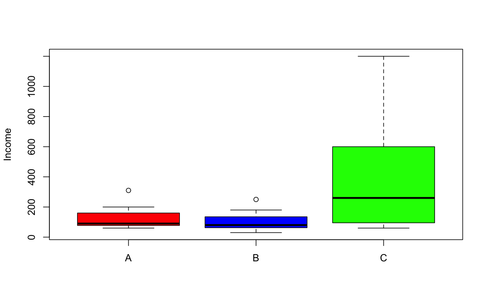

Data for Exercise 10.14
Board
A data frame with 7 observations on the following three variables.
A, B, and CKitchens, L. J. (2003) Basic Statistics and Data Analysis. Duxbury
boxplot(salary ~ university, data = Board, col = c("red", "blue", "green"), ylab = "Income")tapply(Board$salary, Board$university, summary)#> $A #> Min. 1st Qu. Median Mean 3rd Qu. Max. #> 60.0 77.5 90.0 133.6 160.0 310.0 #> #> $B #> Min. 1st Qu. Median Mean 3rd Qu. Max. #> 30.0 62.5 80.0 107.9 135.0 250.0 #> #> $C #> Min. 1st Qu. Median Mean 3rd Qu. Max. #> 60.0 95.0 260.0 415.7 600.0 1200.0 #> #>anova(lm(salary ~ university, data = Board))#> Analysis of Variance Table #> #> Response: salary #> Df Sum Sq Mean Sq F value Pr(>F) #> university 2 408431 204215 2.815 0.08635 . #> Residuals 18 1305800 72544 #> --- #> Signif. codes: 0 ‘***’ 0.001 ‘**’ 0.01 ‘*’ 0.05 ‘.’ 0.1 ‘ ’ 1 #>